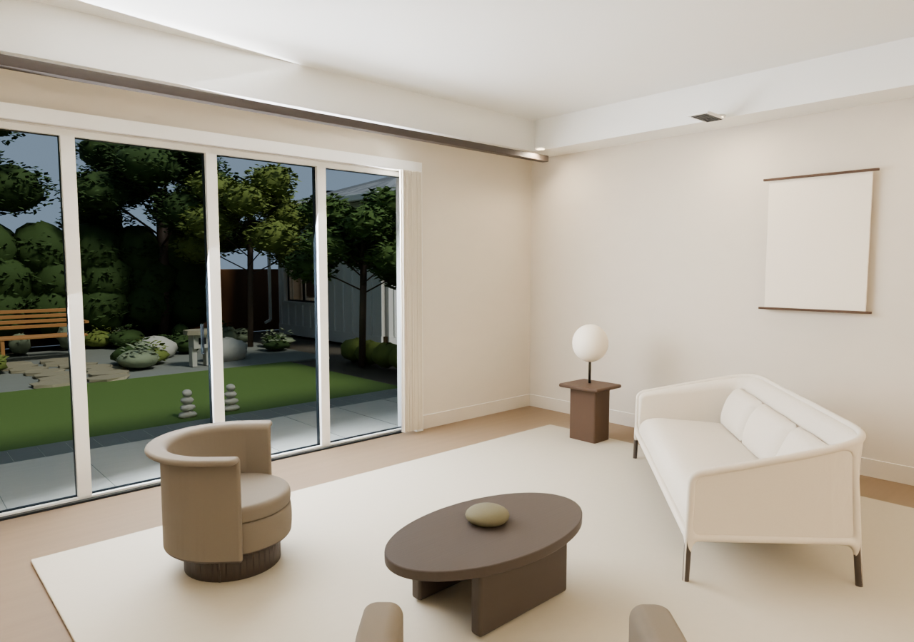
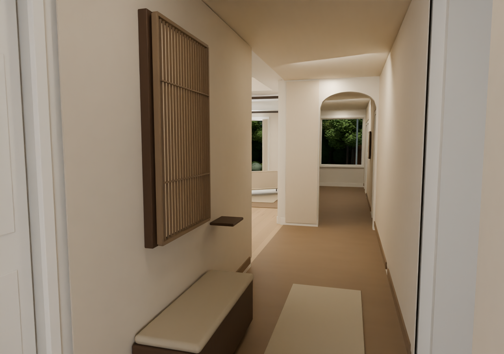
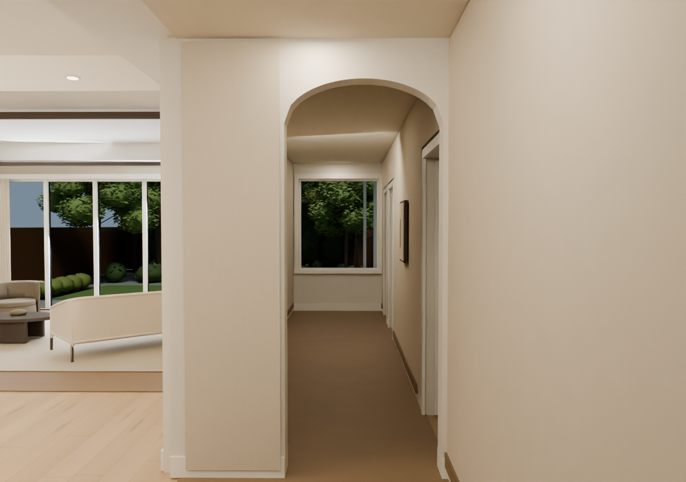
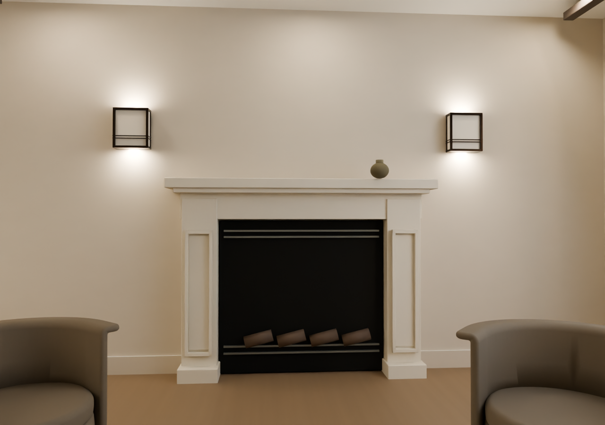
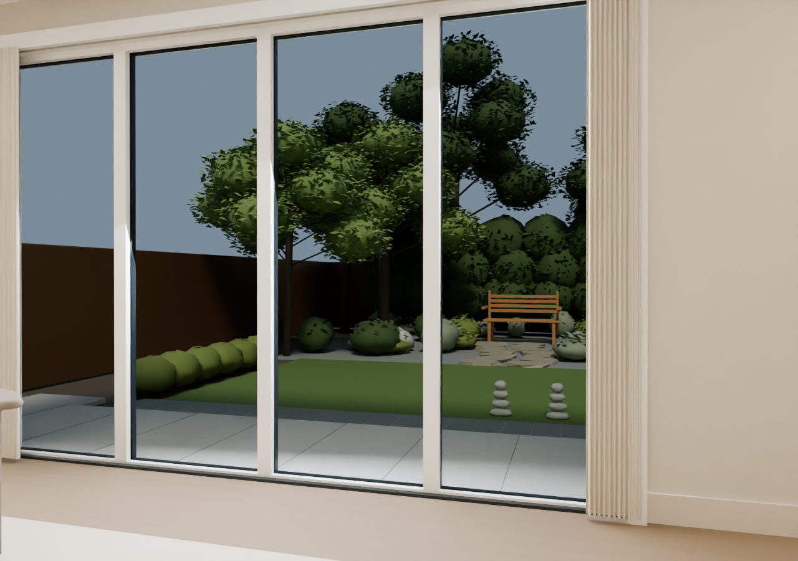
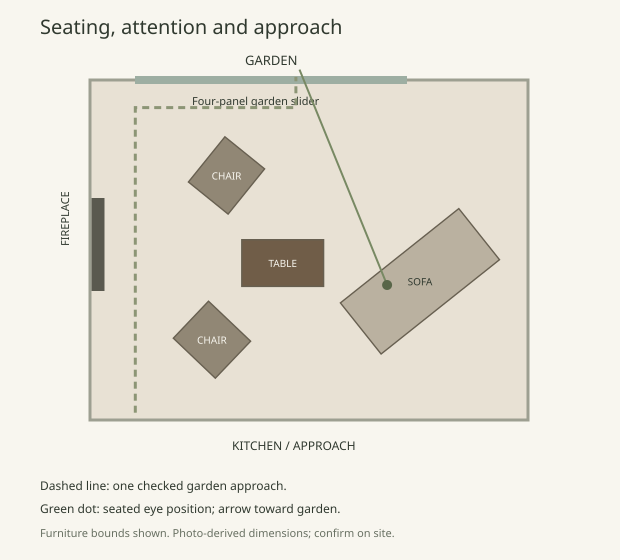
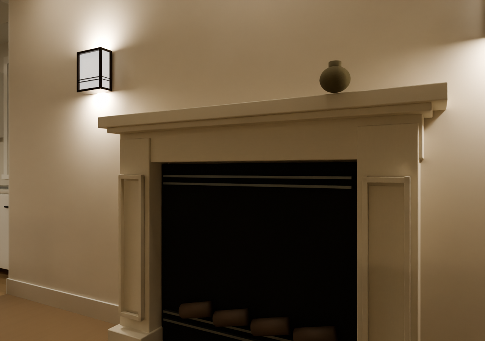

The garden supplies the pattern. Timber, linen and mineral plaster provide a quiet frame.
Make the pause useful.
A shallow seat, daily shoe storage and a key tray. One softly lit timber panel marks the place to settle.
Let the interval remain.
A short arrival mat replaces the long stripe. Most of the hallway stays bare, ending in the living picture of its fixed window.
Give the garden priority.
Turn the low sofa toward the glass. Remove the tall luminous wall panels and lower the table arrangement.
One welcome.
A long, quiet breath.

The 40 cm deep perch is tucked against a solid wall bay. A warm woven pad makes putting on shoes comfortable; the little tray takes keys without becoming a display shelf.
Beyond it, nothing needs to happen for several metres. One small woven work marks a later pause. Leave the rear window sill empty.
About 1.20 m of modeled passage remains beside the unoccupied seat. Confirm actual clearances and door swings before fabrication.

Keep its character.
Quiet its surroundings.
The photographed mantel and framed sconces remain. A warm chalk finish brings the surround and inset panels together, allowing the dark firebox to be the anchor.
One low earthen vessel sits off centre. Leave the wall above empty. The sconces form gentle pools rather than a theatrical wall wash.
Proposed finish; existing geometry retained. The fire is shown unlit. Confirm coatings against the actual fireplace specifications.

A room that changes
without being redecorated.

Same sofa position and lens in every view. Foliage and atmosphere are illustrative; these are not dated sun studies or a measured daylight analysis.

Arrange the room from the seats.
The sofa looks diagonally out, keeping the hearth to the left. Both chairs can swivel toward a conversation, the fireplace or the trees.
The low table is shifted away from the sofa's corner. A shaded reading lamp sits near the garden end. Keep the approach to the terrace free of stools, baskets and plant pots.

Light behind the craft.
A single fine, senbon-inspired panel is enough here. Conceal warm-white LEDs inside the frame, behind an opal diffuser. The timber should cast a shadow; individual LED dots should disappear.
Use high colour quality light, smooth dimming and a warm evening setting. A roughly 2700 K useful level, warming toward 2200 K, is the design intention. The final channel depth and diffuser need a full-size sample.
Provide a removable front, accessible driver and heat-dissipating channels. The modeled shallow box is a visual study, not a fabrication or electrical detail.
References: Tanihata lattice patterns · Warm-dimming technology
Arrival
One warm panel and enough nearby light to find keys. Let the rest of the hall be quieter.
Reading
Use the shaded lamp and low sconces. Dim reflected indoor light so the glass keeps its depth.
Late night
Turn decorative garden accents off after bedtime. Keep useful step and passage lighting separate.
Polish is also
what stays clear.
Keep exploring.
{kind=link}
Original R6 source preserved. 3,850 non-proposal meshes retain their vertices, topology and world placements. Seated sightline, furniture spacing and a garden approach checked against the model. This design study is presented through still views; no new film accompanies it.